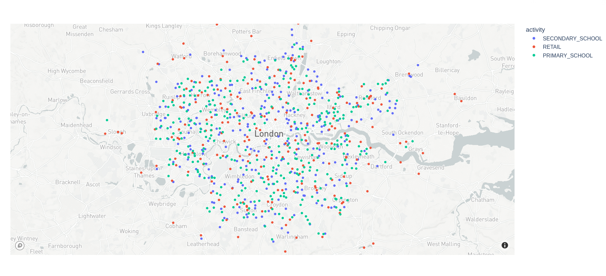

Getting started
SPC generates output for many study areas, including all of the counties in England. If the area you want to model is listed or you just want to explore the data, no need to run SPC yourself – just download data for your area.
There’s one .pb.gz file per study area. After decompressing the .gz, you have a .pb file. The data uses protocol buffers to efficiently encode its schema. You can read the “protobuf” (shorthand for a protocol buffer file) in any supported language, and then extract and transform just the parts of the data you want.
Python
To work with SPC protobufs in Python, you need two dependencies setup:
- The protobuf library
- You can install system-wide with
pip install protobuf - Or add as a dependency to a conda, poetry, etc environment
- You can install system-wide with
- The generated Python library, synthpop_pb2.py
- You can download a copy of this file into your codebase, then
import synthpop_pb2 - You can also generate the file yourself, following the docs:
protoc --python_out=python/ synthpop.proto
- You can download a copy of this file into your codebase, then
Example: converting to JSON
To interactively explore the data, viewing JSON is much easier. It shows the same structure as the protobuf, but in a human-readable text format. The example below uses a small Python script:
# Download a file
wget https://ramp0storage.blob.core.windows.net/spc-output/v1/rutland.pb.gz
# Uncompress
gunzip rutland.pb.gz
# Convert the .pb to JSON
python3 python/protobuf_to_json.py data/output/rutland.pb > rutland.json
# View the output
less rutland.jsonExample: convert to numpy arrays
The ASPICS project simulates the spread of COVID through a population. The code uses numpy, and this script converts the protobuf to a bunch of different numpy arrays.
Note the code doesn’t keep using classes from the generated Python code for protobufs. The protobuf is a format optimized for reading and writing; you shouldn’t use it in your model if there’s a more appropriate tool you’re familiar with, like data frames.
Example: draw all venues
This script reads a protobuf file, then draws a dot for every venue, color-coded by activity.

Understand the schema
Here are some helpful tips for understanding the schema.
Each .pb file contains exactly one Population message. In contrast to datasets consisting of multiple .csv files, just a single file contains everything. Some of the fields in Population are lists (of people and households) or maps (of venues keyed by activity, or of MSOAs). Unlike a flat .csv table, there may be more lists embedded later. Each Household has a list of members, for example.
The different objects refer to each other, forming a graph structure. The protobuf uses uint64 IDs to index into other lists. For example, if some household has members = [3, 10], then those two people can be found at population.people[3] and population.people[10]. Each of them will have the same household ID, pointing back to something in the population.households list.
Flows
SPC models daily travel behavior of people as “flows.” Flows are broken down by by an activity – shopping/retail, attending primary or secondary school, working, or staying at home. For each activity type, a person has a list of venues where they may do that activity, weighted by a probability of going to that particular venue.
Note that flows_per_activity is stored in InfoPerMSOA, not Person. The flows for retail and school are only known at the MSOA level, not individually. So given a particular Person object, you first look up their household’s MSOA – msoa = population.households[ person.household ].msoa and then look up flows for that MSOA – population.info_per_msoa[msoa].flows_per_activity.
Each person has exactly 1 flow for home – it’s just person.household with probability 1. A person has 0 or 1 flows to work, based on the value of person.workplace.
This doesn’t mean that all people in the same MSOA share the same travel behavior. Each person has their own activity_durations field, based on time-use survey data. Even if two people share the same set of places where they may go shopping, one person may spend much more time on that activity than another.
See the ASPICS conversion script for all of this in action – it has a function to collapse a person’s flows down into a single weighted list.
How do you interpret the probabilities/weights for flows? If your model needs people to visit specific places each day, you could randomly sample a venue from the flows, weighting them appropriately. For retail, you may want to repeat this sampling every day of the simulation, so they visit different venues. For primary and secondary school, it may be more appropriate to sample once and store that for the simulation – a student probably doesn’t switch schools daily.
Alternatively, you can follow what ASPICS does. Every day, each person logically visits all possible venues, but their interaction there (possibly receiving or transmitting COVID) is weighted by the probability of each venue.